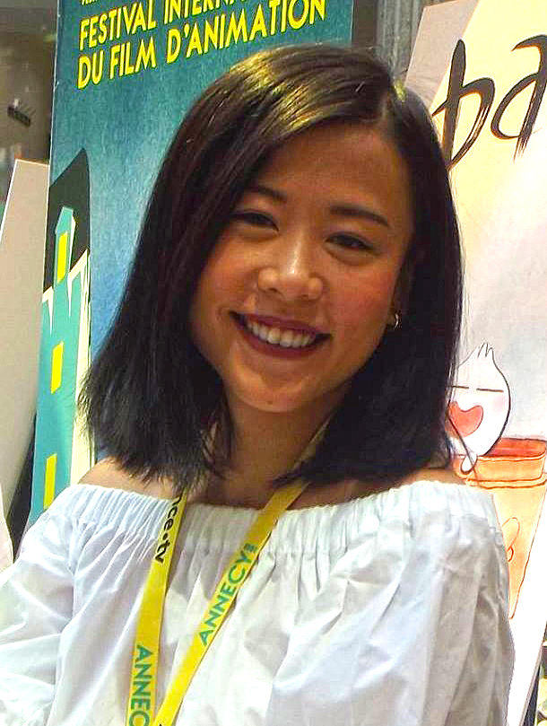

Domee Shi and Turning Red (2022)

Personal Information
Movie Information
Behind-the-Scene
- Ethnicity: Chinese Canadian
- Occupation: Director, Screenwriter, Animator
- Birth: Chongqing, China, 1989
- Education: Sheridan College (Bachelor of Animation)
- Title: Turning Red
- Where to watch: Disney+
- Movie info: "Turning Red" is a 2022 animated fantasy-comedy film directed by Domee Shi. The film follows a 13-year-old girl named Mei Lee, who transforms into a giant red panda whenever she gets too excited or stressed. The film explores themes of adolescence, cultural identity, and the complexities of growing up in a Chinese-Canadian family.
- Based on: The film is based on Domee Shi's personal experiences and cultural heritage, as well as her previous short film "Bao."
- Awards:
- Oscar nomination for Best Animated Feature
- Golden Globe nomination for Best Animated Feature Film
- BAFTA nomination for Best Animated Film
- Critics' Choice Movie Award for Best Animated Feature
- Annies Award for Best Animated Feature
- Genre: Animated Fantasy-Comedy
- Theme: The film explores themes of adolescence, cultural identity, and the balance between honoring family traditions and finding one's own path.
- Cultural background: Domee Shi drew from her own experiences growing up as a Chinese immigrant in Canada to create a story that is both personal and universally relatable.
Source
- Concept development: Shi discusses how the idea for the film evolved from her own life experiences and the challenges of balancing humor and emotional depth in the narrative.
Source
- Film technique: Shi employs vibrant animation styles and a unique visual language to bring the fantastical elements of the story to life, while grounding it in the reality of Mei's emotional journey.
Source
- Collaborator:
- Screenwriter: Domee Shi co-wrote the screenplay with Julia Cho, ensuring that it reflected her personal vision and cultural insights.
Source
- Voice Actor:
- Rosalie Chiang as Mei Lee - Shi chose Chiang for her ability to convey the humor and heart of the character.
Source
- Sandra Oh as Ming Lee - Shi appreciated Oh's depth and experience, bringing authenticity to the role of Mei's mother.
Source
- Producer: The film was produced by Lindsey Collins, who supported Shi's vision and helped bring the project to life.
Source
- Fund support: The film was produced by Pixar Animation Studios, with financial backing from The Walt Disney Company.
Source
- Challenge: Shi faced challenges in ensuring the film's cultural authenticity while making it accessible and engaging for a global audience. She also navigated the technical complexities of animating the transformation scenes.
Source
- Anecdote: Domee Shi shared a story about how her own experiences with overprotective parents and cultural expectations inspired many of the humorous and heartfelt moments in the film.
Source